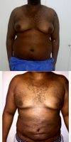
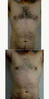
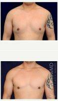

Check the price list of leading plastic surgeons, who performed gynecomastia surgery. These prices are taken from the realself website from reviews of patients, as well as on official web pages of surgeons.
Medical science is yet to come up with a clear explanation of what causes Gynecomastia or male breast growth. One cure for Gynecomastia is male breast reduction surgery, a cosmetic plastic surgery procedure. In this procedure, the plastic surgeon removes fat, glandular and excess skin from the chest in order to give it a firmer, masculine appearance.
Male breast reduction surgery is a simple yet invasive cosmetic surgery as a lot of flesh and fat is removed. Some risks associated with this surgery include infection, excessive bleeding, an allergic reaction to anaesthesia, dehydration, hematomas or seromas.
21 Year Old Man Treated With Male Breast Reduction With Dr Bryan C. McIntosh, MD, Bellevue Plastic Surgeon
If the doctor suspects that you have an underlying medical condition that is causing your breasts to grow, you will be referred to the appropriate specialist. If the conditions are ideal then you should qualify for male breast reduction surgery.
Gynecomastia in most cases consists of tough fibroglandular tissue and not fat. Vaser lipo or other lipo systems can help but it will not remove all of the tissue if it is fibroglandular in nature.
25 Year Old Man Treated With Male Breast Reduction With Dr. Larry Pollack, MD, San Diego Plastic Surgeon
Prior to an important decision of having surgery you have to do your homework. In the US the number of Gynecomastia procedures is about 18,000 a year which is not a big number compare to breast augmentation(500,000) or other plastic surgery procedures.
It mean that you should find experienced board certified plastic surgeons. The main cause is enlarged breast glands which in my experience is present in 90% of the gynecomastia patients suffer from, for this reason liposuction alone, regardless the type of liposuction, may not be sufficient for most patients.
Again you have to do your homework and choose the right procedure for you.

28 Year Old Male With Enlarged Breast Gynecomastia By Doctor Franklin D. Richards, MD, Bethesda Plastic Surgeon
Use of liposuction alone is going to be unsuccessful if you have much in the way of excess breast tissue. That needs to be cut out, although a variety of techniques can be used that produce small incisions.
To find a good doctor, look for a board-certified plastic surgeon who does the operation frequently.
Male Breast Reduction Prices:
$5,800 – Sean Younai, MD, FACS – Encino, CA (Beverly Hills, CA) – 2008;
$5,000 – Dr Pichet – Bangkok (Thailand) – 2009;
$6,000 – Mordcai Blau, MD – New York (New York, NY) – 2009;
$3,200 – Carol L. Hathaway, MD – Spokane, WA (Spokane Valley, WA) – 2009;
30 Year Old Man Treated With Male Breast Reduction With Dr Milan Doshi, MS, MCh, India Plastic Surgeon
32 Year Old Man Treated With Male Breast Reduction With Doctor Karthik Ram, MRCS, DNB, India Plastic Surgeon
33 Year Old Man Treated With Male Breast Reduction By Doctor Jonathan Hall, MD, Boston Plastic Surgeon
41 Year Old Man Treated With Male Breast Reduction By Dr Jeffrey D. Wagner, MD, Indianapolis Plastic Surgeon
Adult Male Treated For Breast Reduction With Doctor Elliot W. Jacobs, MD, New York Plastic Surgeon
Before And After Male Breast Surgery By Dr Shahram Salemy, MD, FACS, Seattle Plastic Surgeon

Doctor Derby Sang Caputo, MD, Dominican Republic Plastic Surgeon 34 Year Old Man Treated With Male Breast Reduction

Doctor Jonathan Hall, MD, Boston Plastic Surgeon 31 Year Old Man Treated With Male Breast Reduction
Doctor Miguel Delgado, MD, San Francisco Plastic Surgeon Gynecomastia
Doctor Robert Caridi, MD, Austin Plastic Surgeon 24 Year Old Man Treated With Gynecomastia Removal Treatment – Male Breast Reduction
Doctor Samuel N. Pearl, MD, San Jose Plastic Surgeon Male Breast Reduction (Gynecomastia)
Doctor Sean T. Lille, MD, Scottsdale Plastic Surgeon 40 Year Old Man Treated With Male Breast Reduction
Doctor William Franckle, MD, FACS, Voorhees Plastic Surgeon Male Breast Reduction
Dr Miguel Delgado, MD, San Francisco Plastic Surgeon Gynecomastia
Dr Richard Dale Reynolds, MD, El Paso Plastic Surgeon Gynecomastia, 23 Year Old Male
Dr Steven Teitelbaum, MD, Los Angeles Plastic Surgeon Male Breast Reduction
Dr. George Commons, MD, Palo Alto Plastic Surgeon Gynecomastia
Dr. Jose Perez-Gurri, MD, FACS, Miami Plastic Surgeon Gynecomastia

Dr. Michael Law, MD, Raleigh-Durham Plastic Surgeon 25 Year Old Man Treated With Male Breast Reduction
Dr. Steven Vath, MD, Denver Plastic Surgeon 21 Year Old Gynecomastia (male Breast Reduction) Patient
Gynecomastia By Dr. Michael Zarrabi, MD, Santa Monica Plastic Surgeon
Gynecomastia On 36-year-old With Doctor Jed H. Horowitz, MD, FACS, Orange County Plastic Surgeon
Gynecomastia With Dr. Miguel Delgado, MD, San Francisco Plastic Surgeon
Male Breast Reduction For 30 Year Old Male By Doctor J. Jason Wendel, MD, FACS, Nashville Plastic Surgeon
 $6,500 – Joseph Thomas Cruise, MD – Newport Beach, CA – 2016;
$7,500 – Elliot W. Jacobs, MD – New York, NY – 2016;
$1,047 – Prashant Murugkar, MD – Mumbai, India – 2016;
$4,200 – Jean-Pierre Riou, MD – Cornelius, NC (Charlotte, NC) – 2016;
$5,500 – Daniel Suver, MD – Anchorage, AK – 2016;
$6,000 – Elliot W. Jacobs, MD – New York, NY – 2016;
$2,400 – Dr. Michael Gard – Chicago, IL – 2016;
$8,000 – Elliot W. Jacobs, MD – New York, NY – 2016;
$9,000 – James A. Hoffman, MD – Minneapolis, MN (Saint Paul, MN) – 2016;
$6,841 – Jeremy S. Hurren, BSc, MBBS, FRCS (Plast) – Nuffield, Eastleigh, GB (Chichester, P6) – 2016;
$6,500 – Joseph Thomas Cruise, MD – Newport Beach, CA – 2016;
$7,500 – Elliot W. Jacobs, MD – New York, NY – 2016;
$1,047 – Prashant Murugkar, MD – Mumbai, India – 2016;
$4,200 – Jean-Pierre Riou, MD – Cornelius, NC (Charlotte, NC) – 2016;
$5,500 – Daniel Suver, MD – Anchorage, AK – 2016;
$6,000 – Elliot W. Jacobs, MD – New York, NY – 2016;
$2,400 – Dr. Michael Gard – Chicago, IL – 2016;
$8,000 – Elliot W. Jacobs, MD – New York, NY – 2016;
$9,000 – James A. Hoffman, MD – Minneapolis, MN (Saint Paul, MN) – 2016;
$6,841 – Jeremy S. Hurren, BSc, MBBS, FRCS (Plast) – Nuffield, Eastleigh, GB (Chichester, P6) – 2016;

49 Year Old Man Treated With Male Breast Reduction With Dr. Douglas L. Forman, MD, Bethesda Plastic Surgeon
Dr. Bivik Shah, MD, Columbus Plastic Surgeon 34 Year Old Man Has Gynecomastia Surgery
Doctor Ven Erella, MD, Austin Plastic Surgeon Patient 2 Male Breast Reduction
Doctor Glenn Lyle, MD, Raleigh-Durham Plastic Surgeon 24 Year Old Man Treated With Male Breast Reduction
Dr George Lefkovits, MD – , New York Plastic Surgeon Male Breast Reduction Surgery